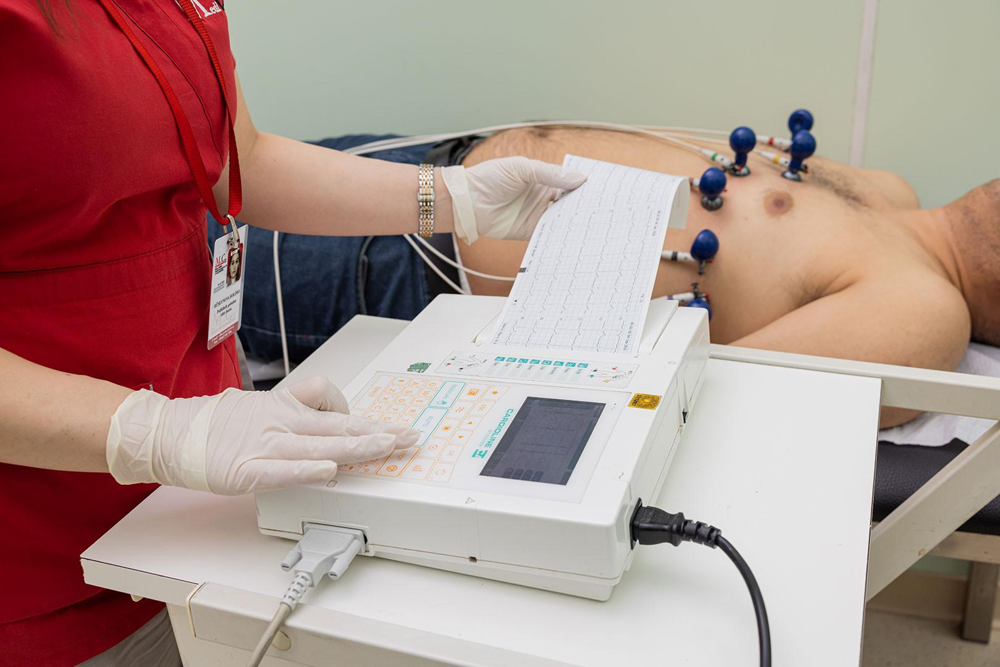
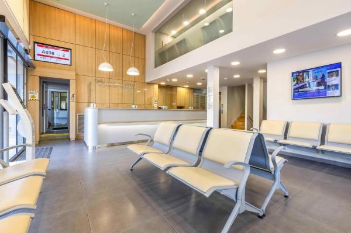

Your Health Journey Deserves Clarity.
Explore essential diagnostic services, understand your examination process, and schedule your visit through a simple, compassionate, patient-friendly experience.
Doctor Consultation & Findings Review
Detailed explanation of scan findings so you never leave our center in uncertainty.
What Type of Diagnostic Test Do You Need?
Hover and explore our core examination modalities. Click through to discover preparation requirements, test durations, and doctor instructions.
A Simple and Organized Diagnostic Experience
We respect your time. Here is how your diagnostic visit unfolds seamlessly from booking to report collection.
Explore Available Tests
Review the exact procedure specified on your doctor's referral slip or select a preventive screening package tailored to your health needs.
Select Examination
Review specific preparation guidelines such as fasting hours, hydration, or metal-free clothing requirements before leaving home.
Book Your Appointment
Reserve a guaranteed priority time slot online or over the telephone with our responsive patient concierge for minimal waiting.
Visit & Collect Reports
Undergo your scan in hygienic, patient-friendly suites and collect verified radiologist-signed reports on film or your phone.
Know Before You Arrive
Clinically appropriate preparation ensures artifact-free imaging, accurate diagnoses, and a comfortable examination visit.
Inside Our Diagnostic Center
Take a visual tour through our hygienic examination rooms, state-of-the-art imaging suites, and tranquil patient waiting environments.




Understand Your Diagnostic Costs
We publish standardized pricing across all examinations. Review actual fees, inclusions, and book directly.
Chest X-Ray (PA View)
Whole Abdomen Ultrasound
Standard 12-Lead ECG
Executive Diagnostic Package
Designed for Comfort & Peace of Mind
Every clinical touchpoint is intentionally engineered to alleviate scan anxiety and ensure dignified treatment.
Acoustic Dampening
High-absorption sound isolation panels reduce mechanical vibrations and create a peaceful, whisper-quiet examination environment.
Thermostatic Warm Gel
Acoustic ultrasound gel is stored at physiological body temperature (37°C) to eliminate initial cold contact shock during scanning.
Dedicated Chaperones
Certified female nursing chaperones are stationed in every sonography and radiography room to uphold patient privacy and dignity.
Zero Anxiety Care
Step-by-step procedural explanations provided by technologists before positioning eliminate uncertainty and patient distress.
From Doctor Referral to Fast Results
How your clinical referral transforms into a verified digital report accessible by your physician anywhere.
Instant Encrypted Report & Scan Delivery
From the moment your referral prescription is checked in, your diagnostic study flows through a lossless digital pipeline directly to our senior radiologists and your treating doctor.
Referral Ingestion
Your prescription is verified and registered on our PACS system, mapping specific clinical questions for the reading radiologist.
Direct Capture
Flat-panel and acoustic sensors capture lossless uncompressed DICOM datasets instantly routed to high-resolution diagnostic consoles.
Specialist Sign-Off
Senior radiologist MD analyzes anatomical views, enters structured clinical impressions, and applies a digital signature.
Multi-Channel Delivery
You receive WhatsApp PDF links & film printouts, while your referring doctor accesses high-resolution DICOM slices via doctor portal.